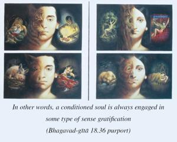

O best of the Bhāratas, now please hear from Me about the three kinds of happiness by which the conditioned soul enjoys, and by which he sometimes comes to the end of all distress.

A conditioned soul tries to enjoy material happiness again and again. Thus he chews the chewed. But sometimes, in the course of such enjoyment, he becomes relieved from material entanglement by association with a great soul. In other words, a conditioned soul is always engaged in some type of sense gratification, but when he understands by good association that it is only a repetition of the same thing, and he is awakened to his real Kṛṣṇa consciousness, he is sometimes relieved from such repetitive so-called happiness.